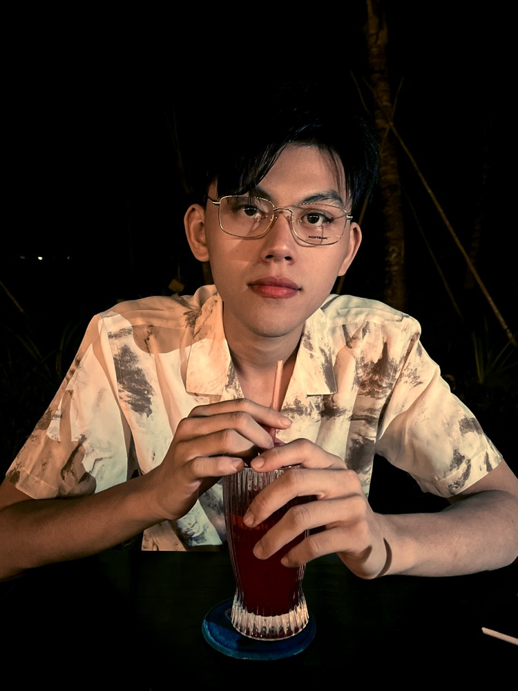

Color Study 01
Portrait — Before / After
A portrait grading study presented as a direct before-and-after comparison.
I’m Trần Quốc Thái, a video editor and colorist focused on clean editing, cinematic color and visual storytelling. This portfolio is intentionally curated around selected work rather than quantity.

A focused selection of current studies. Stronger work will replace placeholders as the portfolio grows.
Video-editing projects will be added here when they meet the quality bar. I’m keeping this section selective instead of filling it with older work that no longer represents my current level.
Three grading studies showing before/after presentation, contrast control and different visual directions.
A portrait grading study presented as a direct before-and-after comparison.
A landscape grading study focused on stronger contrast, deeper environment tones and a more cinematic presentation.
A cinematic grading study balancing sky, landscape and foreground while keeping the image controlled and natural.
Simple, focused and built around the work.
I care about clean editing, visual rhythm, color and the small details that make a finished video feel intentional. My goal is to create polished work without relying on unnecessary effects.
Video editing · Color grading · Real-estate video · Commercial / branded content · Post-production support